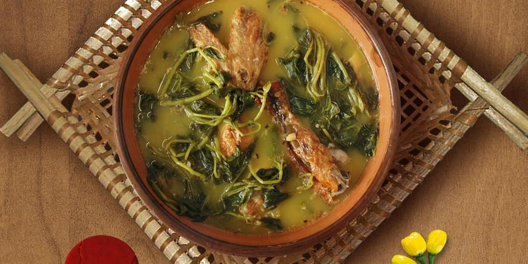

Pato no Tucupi

Description
The dish features duck(pato) cooked in tucupi, a yellow broth made from the juice
of wild manioc (mandioca). Another key ingredient is jambu, a native herb that has a slightly numbing effect on the
mouth, adding an interesting sensory experience to the dish.
Pato no tucupi is often served with white rice and farinha (manioc flour). It's especially popular during the Círio
de Nazaré, a major religious festival in Pará.
Ingredients
- 1 whole duck (approximately 3kg), cut into pieces
- 3 liters of tucupi
- 5 bunches of jambu
- 2 onions, chopped
- 10 cloves of garlic, minced
- 1 bunch of chicória
- 2 tomatoes, chopped
- 2 lemons
- Salt and black pepper to taste
- 1 tablespoon of butter
- 2 tablespoons of olive oil
- Pimenta-de-cheiro
Steps
- Prepare the duck:
- Clean the duck and cut it into pieces
- Rub the duck pieces with lemon juice, salt and pepper. Let it marinate for at least 30 minutes.
- Cook the Aromatics
- Heat the olive and butter in a large pot over medium heat.
- Add the chopped onions, garlic, and tomatoes. Cook until the onions are translucent and the tomatoes
have softened, about 10 minutes.
- Simmer the Duck
- Add the duck pieces to the pot and brown them on all sides
- Pour in the tucupi and add the chopped chicória and pimenta-de-cheiro
- Bring the mixture to a boil, then reduce the heat to low and let it simmer for about 2 hours, or until
the duck is tender.
- Prepare the jambu:
- While the duck is simmering, blanch the jambu in boiling water for a few minutes until wilted. Drain and
set aside.
- Combine and Finish:
- Once the duck is tender, add the blanched jambu to the pot.
- Let the dish simmer for another 10 minutes to allow the flavors to meld together.
- Serve
- Serve Pato no Tucupi hot with white rice and farinha d'água on the side